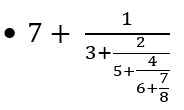

Fracción continua simple
La complejidad de una fracción continua es muy elemental, no excede conocimientos mas allá de la aritmetica clásica. Sin embargo, juega un papel importante en la teoría de números. Ya que permite aproximar de manera eficaz los números irracionales, además es un método con el cual se puede lograr resolver las ecuaciones diofánticas, entre otras de sus aplicaciones.
Un ejemplo de una fracción continua simple podría ser:

Donde está fracción continua simple puede ser evaluada si calculamos y simplificamos las expresiones en el orden especificado, de esta manera: